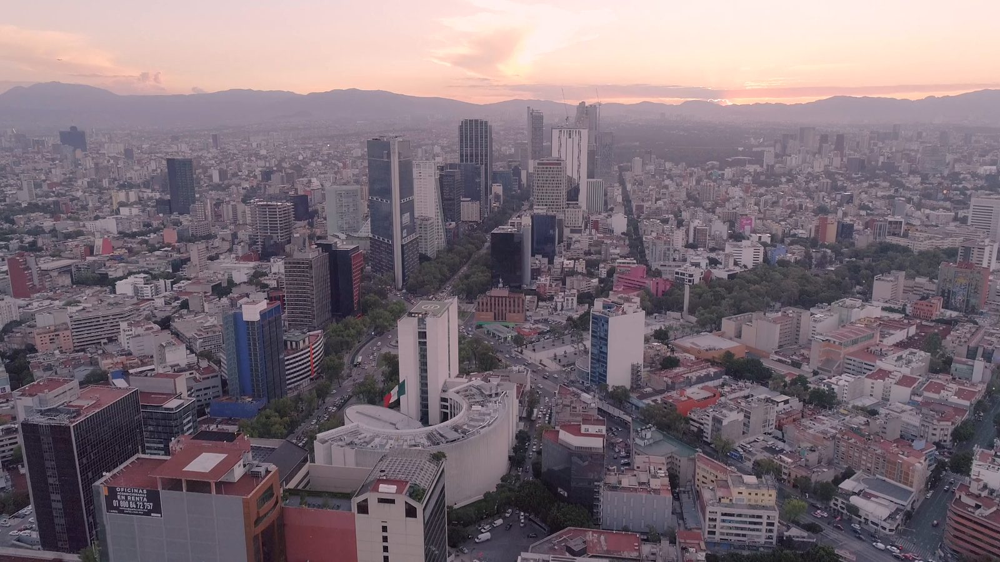
멕시코시티는 해발 2,240m, 산과 화산에 둘러싸인 분지에 있다. 겉보기엔 평평한 대도시지만 이 도시는 해마다 조금씩 가라앉는다. 빠른 곳은 1년에 50cm까지 내려앉는다. 이유를 찾으려면 700년 전, 이 땅이 호수였던 때로 거슬러 올라가야 한다.
1. 서울의 2.5배, 인구는 서울과 비슷
멕시코시티(시우다드 데 메히코)의 면적은 약 1,494㎢로 서울(605㎢)의 2.5배쯤이다. 행정구역은 알카디아라고 부르는 16개 구로 나뉜다. 2025년 10월 기준 인구는 922만 명으로 서울(934만 명)과 비슷하다.
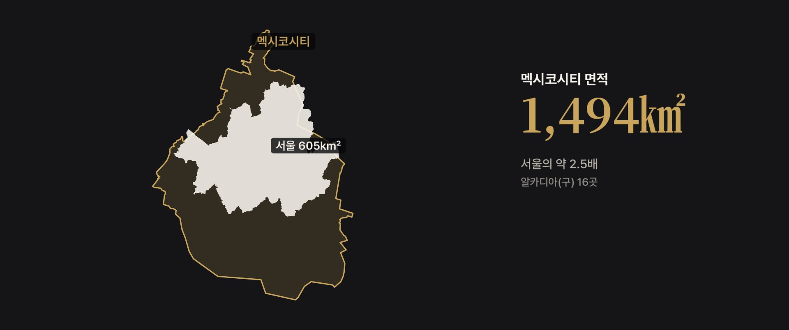
하지만 도시는 경계 밖으로 한참 넘쳐 있다. 주변 멕시코주·이달고주의 시까지 합친 광역권(멕시코 계곡 대도시권) 인구는 2020년 2,140만 명이었다.
| 항목 | 멕시코시티 | 서울 |
|---|---|---|
| 면적 | 약 1,494㎢ | 605㎢ |
| 인구(2025) | 922만 명 | 934만 명 |
| 광역권 인구(2020) | 2,140만 명 | — |
| 해발 고도 | 2,240m | — |
| 구 | 알카디아 16곳 | 자치구 25곳 |
출처: INEGI 2025 인구조사(Encuesta Intercensal)·2020 센서스(면적은 인구밀도로 환산), Metrópolis de México 2020, 멕시코시티 관광청, 통계청(서울 인구)
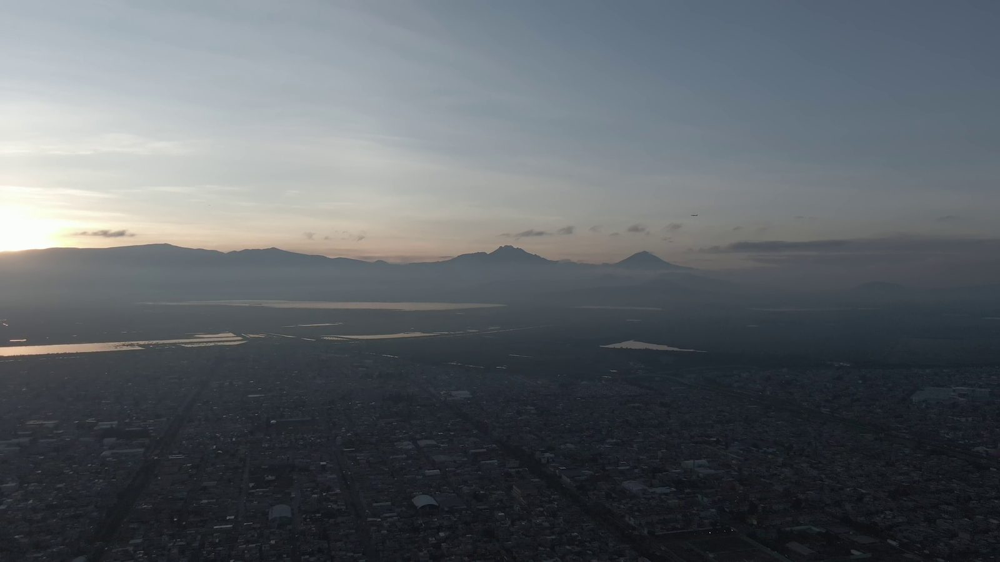
2. 호수 위의 섬에서 시작했다
도시 한가운데 소칼로 광장 자리는 700년 전 텍스코코 호수 서쪽에 떠 있던 작은 섬이었다. 아스테카(메시카) 사람들은 선인장 위에서 뱀을 먹는 독수리가 보이는 곳에 도시를 세우라는 계시를 따라 이 섬에 자리 잡았다고 전한다. 이 장면은 지금 멕시코 국기에 그려져 있다. 도시 이름은 테노치티틀란, 건설 연도는 1325년으로 본다.
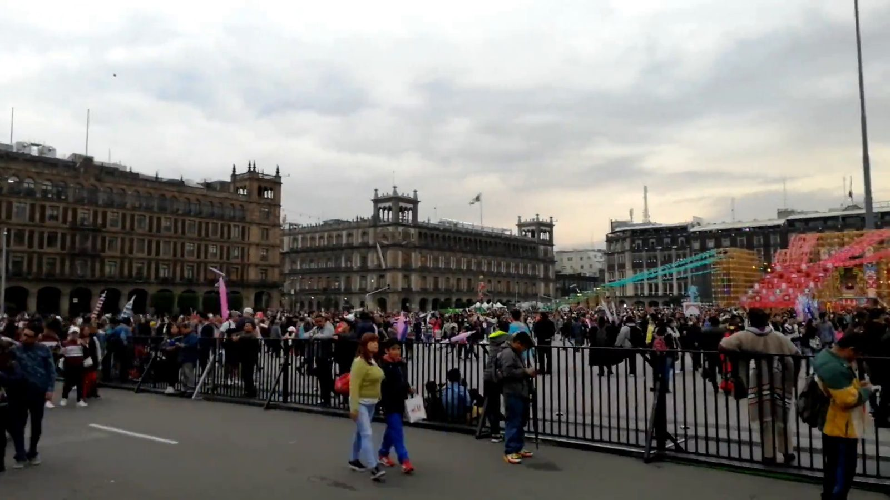
섬은 북쪽 테페약, 서쪽 타쿠바, 남쪽 이스타팔라파로 놓은 둑길(칼사다)로 호숫가와 이어졌다. 도시 안에는 카누가 다니는 운하가 여럿 놓였다. 섬 북쪽에는 쌍둥이 도시 틀라텔롤코가 있었다.
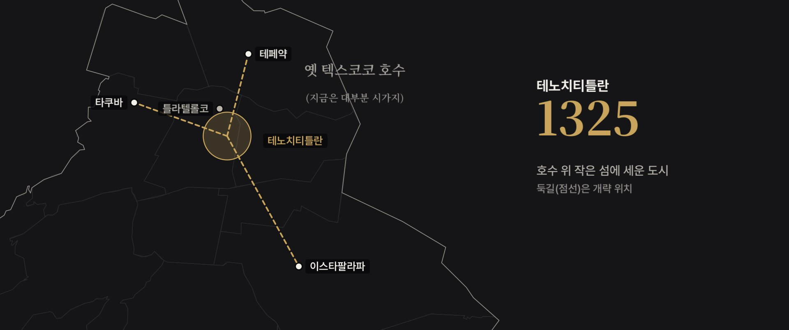
땅이 모자라자 사람들은 얕은 물 위에 흙을 쌓아 밭을 만들었다. 이것이 치남파다. 남쪽 소치밀코에는 옛 호수의 남쪽 줄기와 치남파가 지금도 남아 있어, 1987년 멕시코시티 역사지구와 함께 유네스코 세계유산이 됐다.
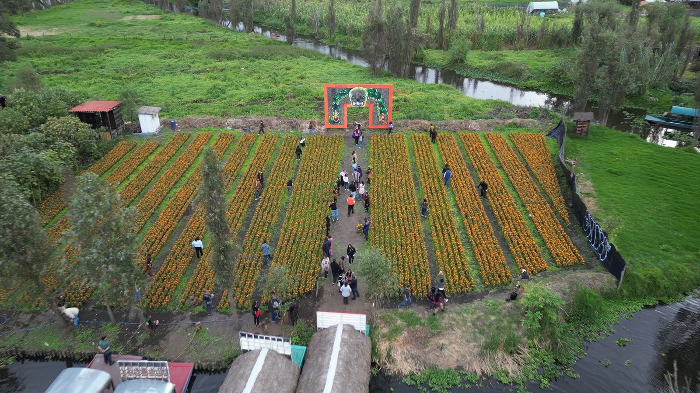
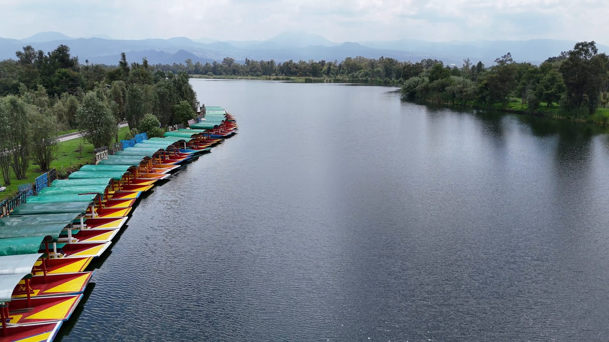
북쪽 둑길이 닿던 테페약 언덕에는 지금 과달루페 성모 대성당이 서 있다.
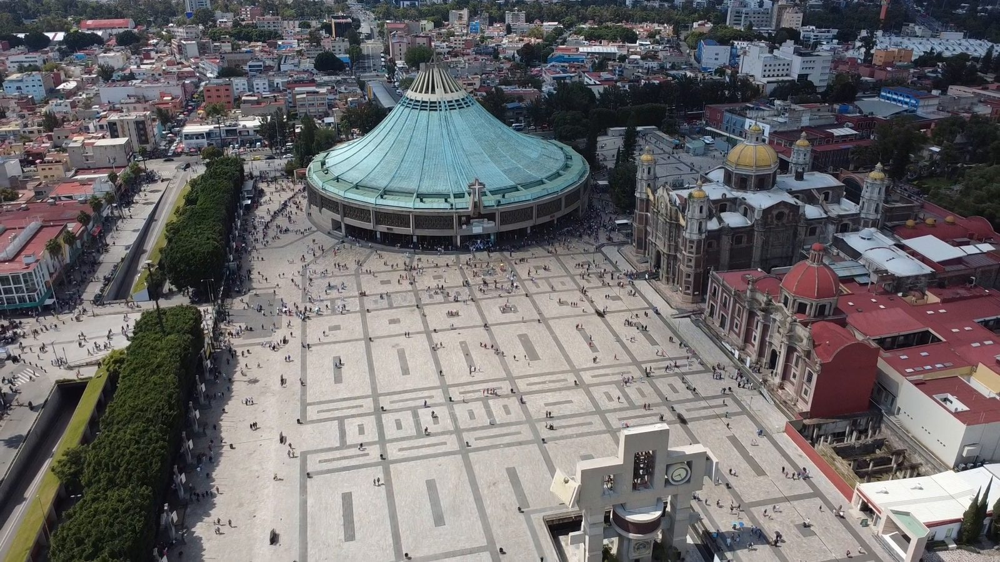
1521년 8월 13일, 몇 달에 걸친 포위 끝에 스페인군과 동맹군이 테노치티틀란을 무너뜨렸다. 스페인은 그 폐허 위에 누에바 에스파냐의 수도를 세웠고, 도시를 둘러싼 호수의 물을 빼기 시작했다. 소칼로 옆 메트로폴리탄 대성당과 템플로 마요르 유적이 그 겹친 시간을 보여 준다.
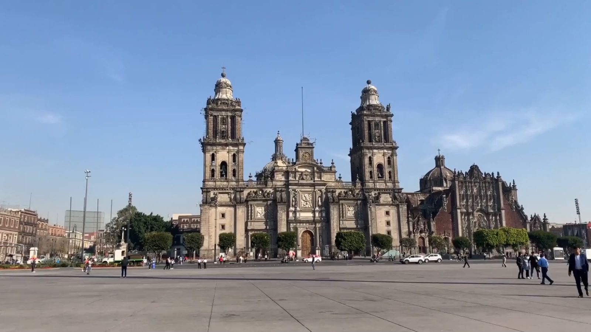
호숫가 도시는 홍수에 자주 시달렸다. 1607년 11월 북쪽 우에우에토카 쪽으로 첫 배수로 공사가 시작됐지만 1629년 큰 홍수가 도시를 덮쳤다. 1900년에는 포르피리오 디아스 정부가 대운하(Gran Canal del Desagüe)를 열었다. 처음 연 지상 구간만 47.5km였다. 그렇게 분지의 호수는 거의 다 말라 사라졌고, 옛 호수 바닥 위로 시가지가 퍼졌다.
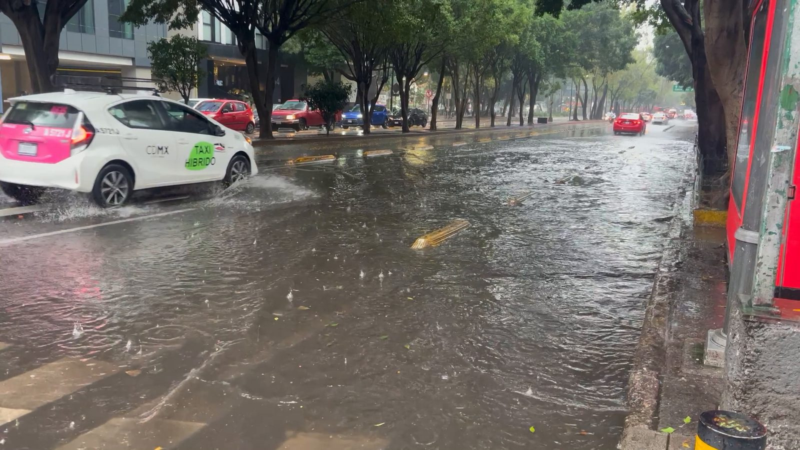
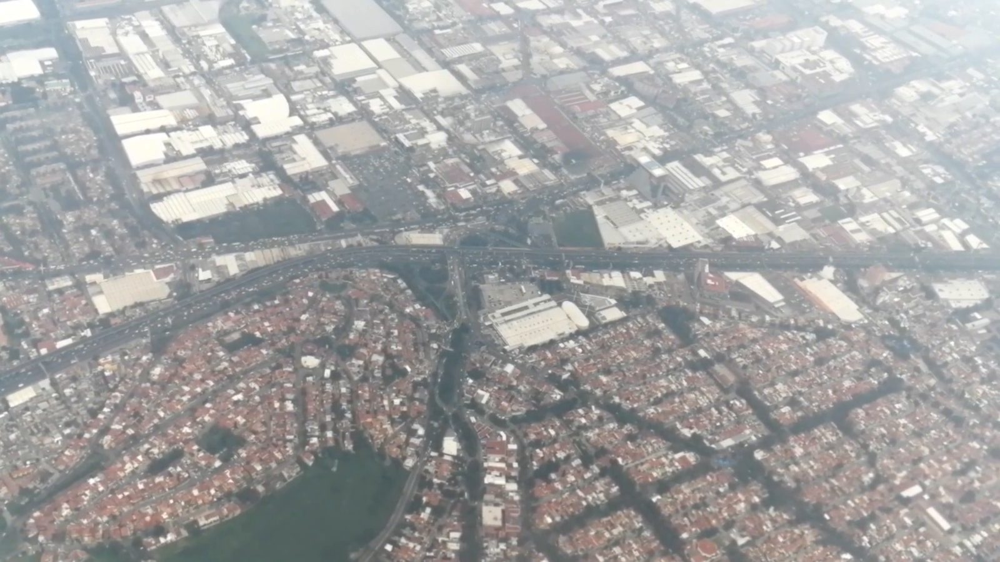
3. 해마다 가라앉는 도시
레포르마 대로의 독립기념탑(천사상)은 1910년에 세워졌다. 그 뒤 주변 땅이 내려앉으면서 받침에 계단을 14개나 더 붙여야 했다. 탑이 솟은 게 아니라 땅이 꺼진 것이다.
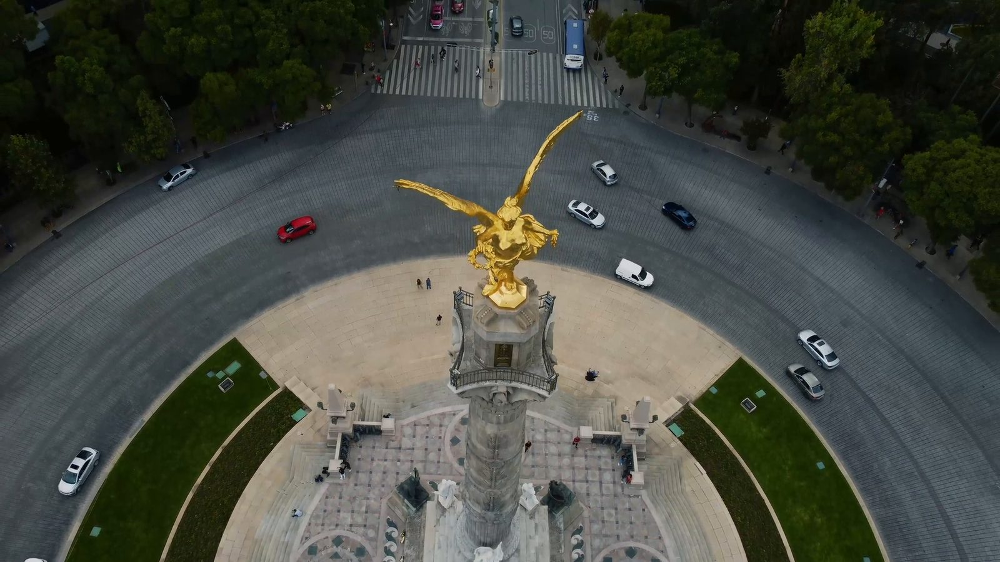
도시 아래는 옛 호수 바닥에 쌓인 무른 진흙층이다. 지난 100년 동안 이 지층에서 지하수를 대량으로 퍼 올리자 진흙이 눌리며 땅이 꺼졌다. 2024년 학술지 Scientific Reports에 실린 위성 관측 연구에 따르면 빠른 곳은 1년에 500mm, 곧 50cm까지 내려앉는다. 미국·인도 공동 위성 NISAR는 2025년 10월부터 2026년 1월 사이 공항 주변 등에서 한 달에 2cm 넘게 꺼지는 곳을 잡아냈다.
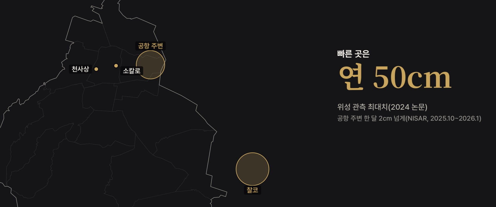
그렇다고 펌프를 멈추기도 어렵다. 멕시코시티 수돗물의 절반 이상(자료에 따라 59~67%)이 땅속 우물에서 나온다. 멀리 쿠차말라 수계에서 끌어오는 물은 3분의 1이 안 된다.
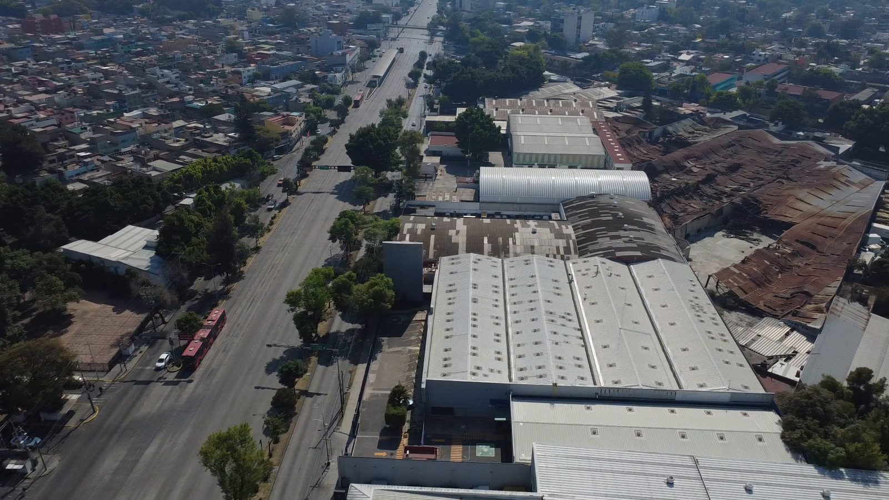
땅이 꺼지면서 길과 건물, 수도관이 갈라지고 지하철도 피해를 입는다.
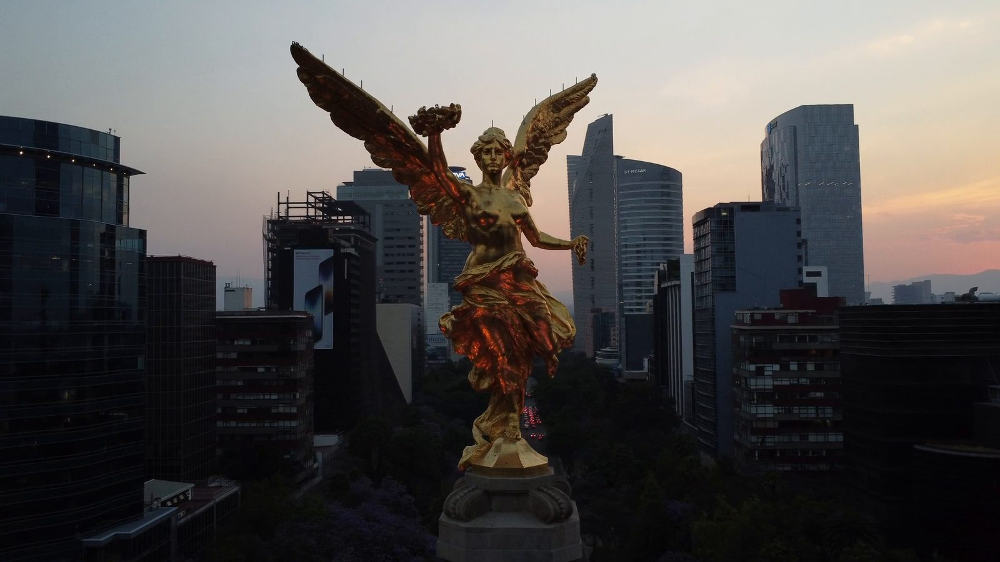
4. 사람들은 세 번 옮겨 갔다
주거와 상업의 중심은 크게 세 번 옮겨 갔다.
① 옛 섬 자리, 센트로 · ~1900년
스페인 시대부터 20세기 초까지 도시의 중심은 옛 테노치티틀란 섬 자리, 지금의 센트로 이스토리코(역사지구)였다.
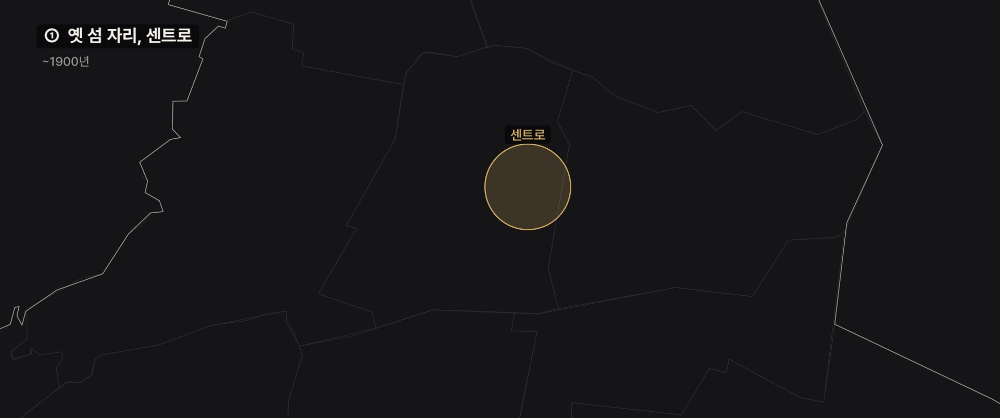
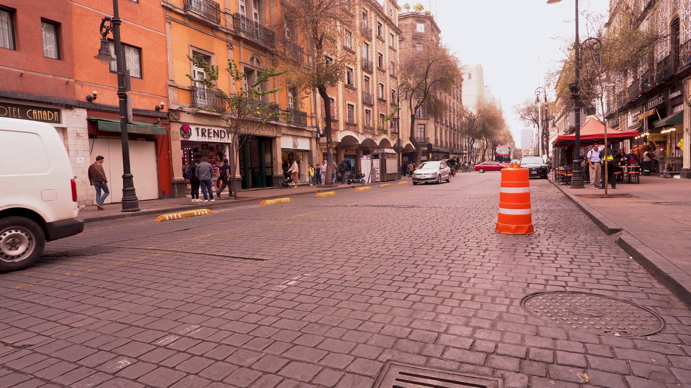
② 서쪽 새 동네, 로마·콘데사·폴랑코 · 1902년~
1902년 시 정부는 서쪽에 로마 지구 계획을 승인했다. 로마는 도로·상수도·하수도를 처음부터 갖춘 멕시코시티의 첫 콜로니아(동네)였다. 이웃한 콘데사는 1920~30년대에 건물이 빠르게 들어섰고, 1937년에는 더 서쪽 옛 아시엔다(농장) 땅에 폴랑코가 개발됐다.
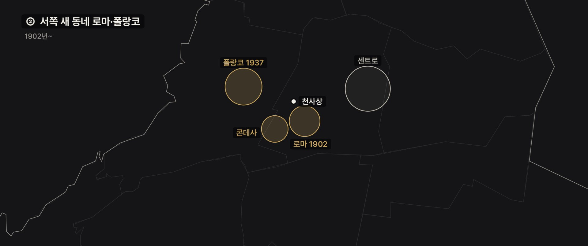
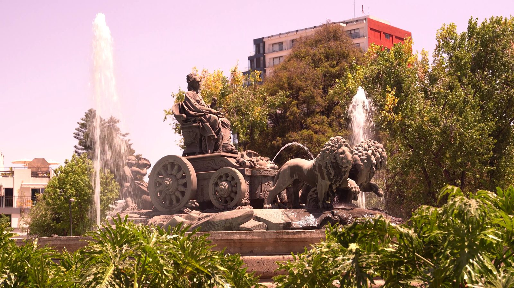
1985년 9월 대지진은 이 동네들에도 큰 상처를 남겼다. 로마 지구에서만 건물 472채가 무너지거나 부서졌다. 로마의 인구는 1970년 9만 5천 명에서 1995년 3만 5천 명으로 줄었다.
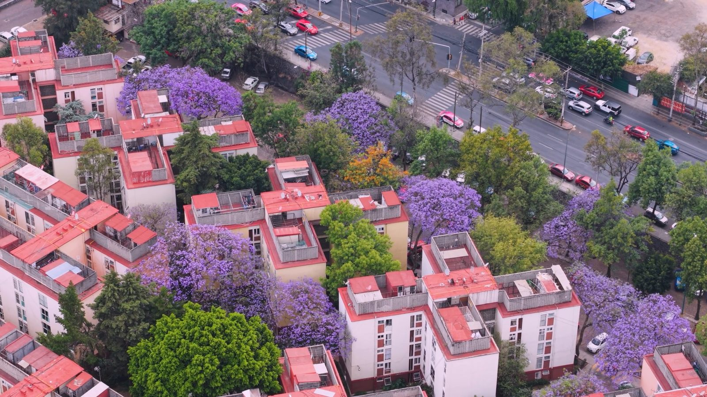
폴랑코는 지금 마사리크 거리를 중심으로 고급 상점과 사무용 빌딩이 늘어선 동네가 됐다.
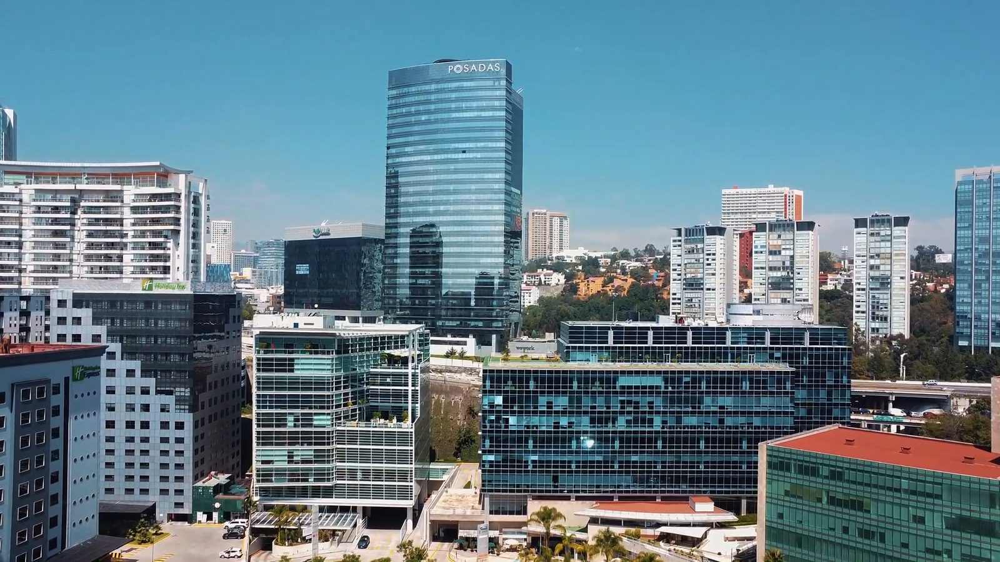
③ 서쪽 언덕, 산타페 · 1980년대~
서쪽 언덕의 산타페는 식민지 시대부터 모래를 캐던 곳이었고, 1960년대부터는 쓰레기 매립지로 쓰였다. 1980년대 대학과 건물이 들어서기 시작했고, 1988~1994년 정부가 세운 개발 계획이 1994년 경제 위기로 멈췄다가 2000년 다시 추진되면서 업무지구로 자리 잡았다. 지금은 고층 빌딩과 대형 쇼핑몰 센트로 산타페, 대학이 모인 신도심이다.
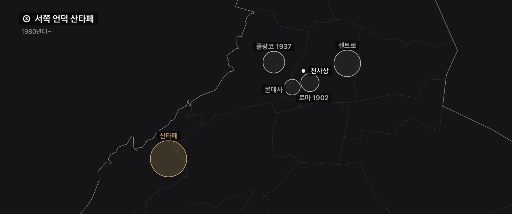
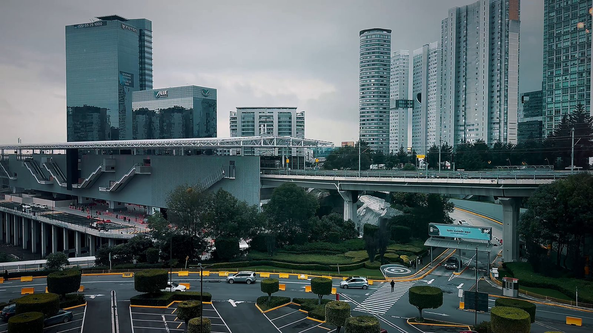
5. 멕시코시티 사람들이 사는 집
1960~1965년 정부는 북쪽 틀라텔롤코에 거대한 아파트 단지를 지었다. 건축가 마리오 파니가 설계한 노노알코-틀라텔롤코 단지는 처음에 아파트 102동, 멕시코에서 가장 큰 단지였다. 1985년 지진 때 누에보 레온 동이 무너지는 큰 피해를 입었다.
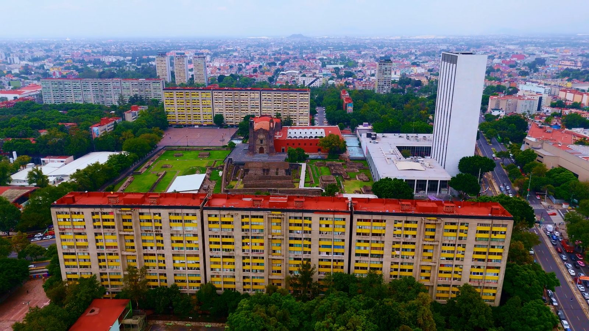
도시 바깥쪽으로는 낮은 집이 끝없이 이어진다. 2020년 멕시코시티에는 사람이 사는 집이 276만 채 있었고, 한 집에 평균 3.3명이 살았다. 2000년 4.0명에서 꾸준히 줄었다.
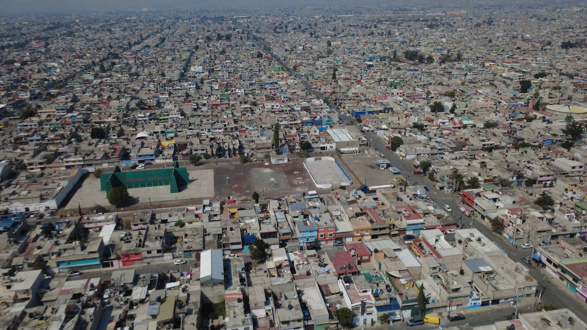
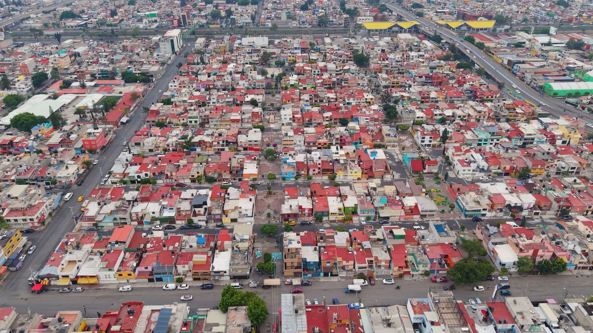
6. 922만 명이 사는 도시
16개 구 가운데 인구가 가장 많은 곳은 동쪽 이스타팔라파로, 2025년 188만 명이 산다. 시민 다섯 명 중 한 명꼴이다. 이스타팔라파는 침하가 심한 옛 호수 바닥 지역이기도 하다.
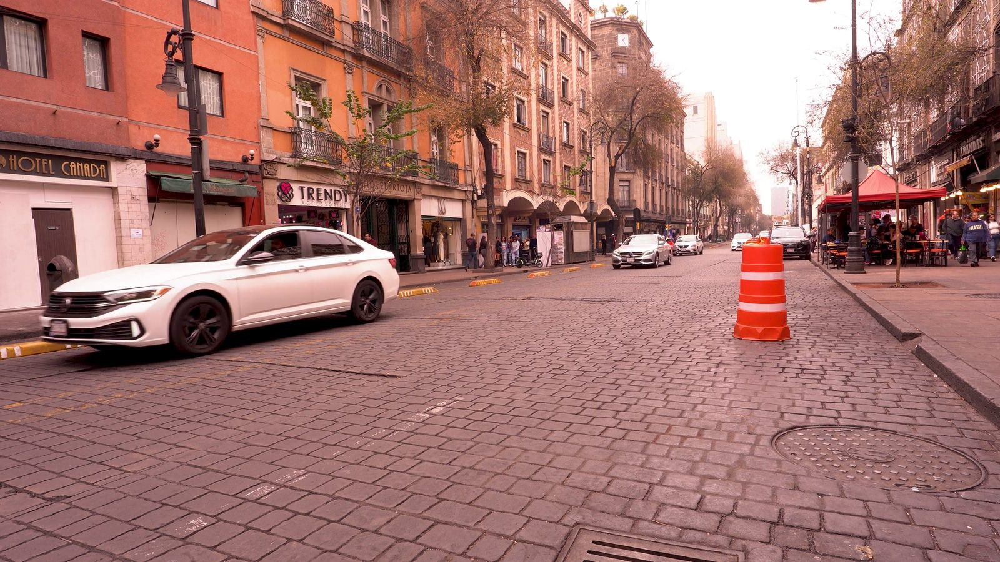
구시가지 골목에는 시장과 노점이 줄지어 있고, 11월 초 망자의 날 무렵이면 거리가 종이 장식(파펠 피카도)과 금잔화로 물든다.
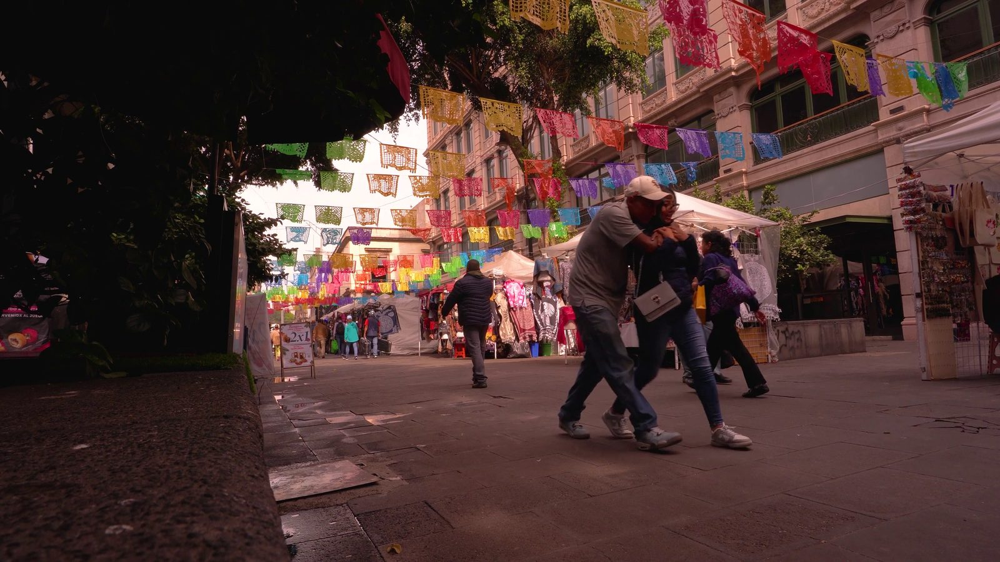
7. 지하철과 케이블카
멕시코시티 지하철은 1969년 9월 4일 처음 달렸다. 2026년 현재 12개 노선, 195개 역, 226.5km이고 하루 450만 명 넘게 탄다.
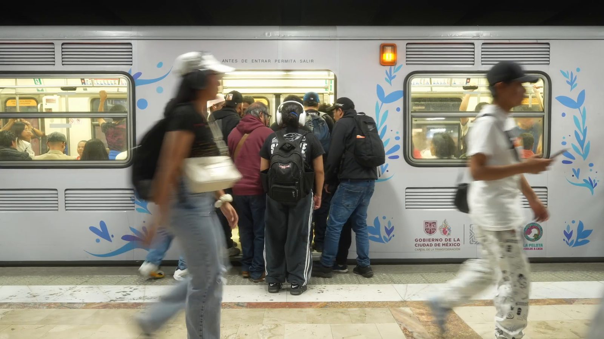
지하철이 닿지 않는 언덕 동네에는 케이블카 버스 '카블레부스(Cablebús)'를 놓았다. 2021년 북쪽 1호선(9.2km)이 처음 열렸고, 같은 해 동쪽 이스타팔라파의 2호선(10.55km)은 세계에서 가장 긴 도시 대중교통 케이블카로 기네스 기록에 올랐다. 2024년에는 차풀테펙 숲을 건너는 3호선이 열려 첫해에만 600만 명 가까이 탔다.
| 항목 | 내용 |
|---|---|
| 지하철 | 1969년 개통 · 12개 노선 · 195개 역 · 226.5km · 하루 450만 명 이상 |
| 카블레부스 1호선 | 2021년 · 9.2km(인디오스 베르데스–쿠아우테펙) |
| 카블레부스 2호선 | 2021년 · 10.55km · 기네스 '가장 긴 도시 케이블카' |
| 카블레부스 3호선 | 2024년 · 차풀테펙 숲 횡단 · 첫해 약 600만 명 |
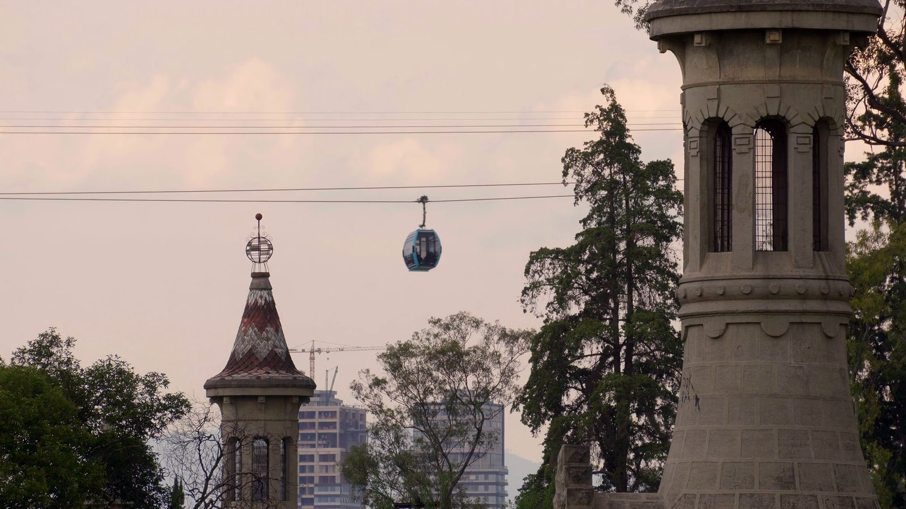
도심은 레포르마 대로가 비스듬히 가로지른다. 독립기념탑도 이 대로 위에 있다.
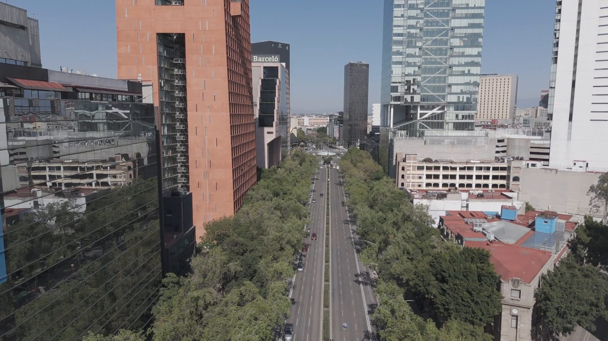
8. 한국과 이어진 도시
1905년 4월 4일, 한인 1,033명이 영국 배 일포드호를 타고 제물포(지금의 인천)를 떠났다. 한 달여 뒤 태평양 쪽 살리나크루스에 내린 이들은 기차와 배로 유카탄반도로 옮겨 가 에네켄(용설란의 한 종류) 농장에서 계약 노동을 했다. 2025년 재외동포청 자료에 따르면 지금 멕시코에 사는 그 후손은 3만 명이 넘는다.
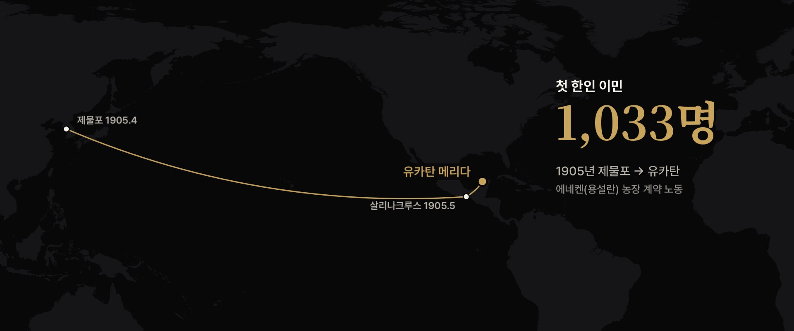
멕시코시티 독립기념탑 옆 소나 로사에는 1990년대 이후 한인이 모여들어 한국 식당과 가게가 모인 '작은 서울(Pequeño Seúl)'이 생겼다.
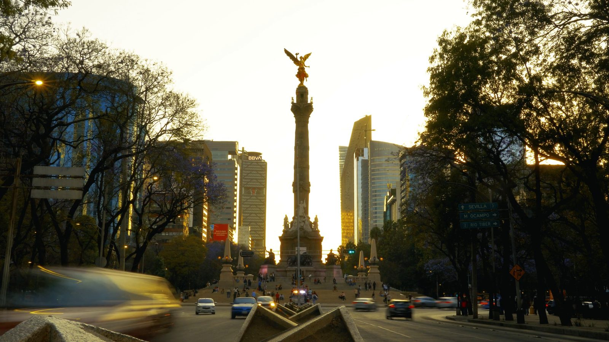
9. 한국에서 가는 법
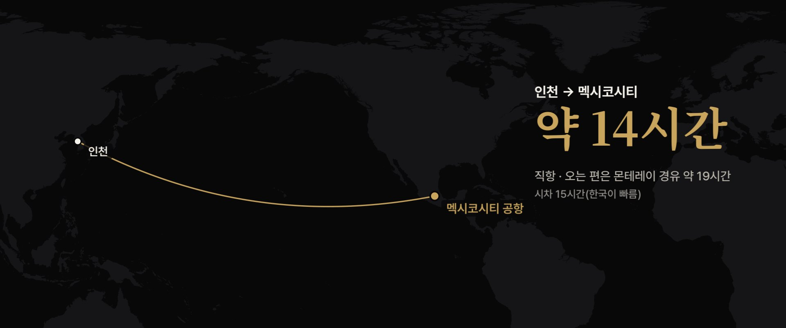
| 항목 | 내용 |
|---|---|
| 비행 | 아에로멕시코 인천→멕시코시티 직항 약 13시간 55분, 돌아오는 편은 몬테레이 경유 약 19시간 15분(2026년 11월 운항 정보 기준) |
| 경유 | 미국·캐나다 경유 1회 환승 약 16~20시간 |
| 시차 | 한국보다 15시간 늦다(멕시코시티는 서머타임 없음) |
| 비자 | 한국 국적자 관광·출장 최대 180일 무비자, 6개월 이상 유효 여권 |
| 항공권 | 왕복 약 100만~200만 원대(2026년 11월 조회, 시기·경유에 따라 크게 다르다) |
이 노선은 운항 요일·횟수가 자주 바뀌고, 2026년 초에는 운휴를 검토한다는 보도도 있었다. 출국 전에 항공사 일정과 주한 멕시코 대사관 공지를 다시 확인하자.
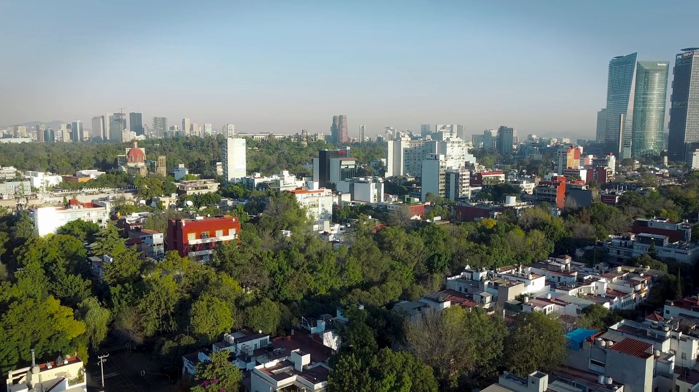
10. 정리
| 연도 | 일어난 일 | 도시 모양으로 보면 |
|---|---|---|
| 1325 | 테노치티틀란 건설 | 호수 위 섬 도시, 둑길·운하·치남파 |
| 1521 | 스페인에 함락 | 폐허 위에 새 수도, 호수 배수 시작 |
| 1607~1629 | 첫 배수로 공사, 대홍수 | 물과의 싸움 |
| 1900 | 대운하 개통 | 호수가 거의 사라지고 시가지 확장 |
| 1902~1937 | 로마·콘데사·폴랑코 | 서쪽 새 동네 |
| 1905 | 첫 한인 이민 1,033명 | 한국과의 인연 |
| 1910 | 독립기념탑 완공 | 이후 계단 14개 추가 |
| 1960~1965 | 틀라텔롤코 아파트 단지 | 대규모 공공 주택 |
| 1969 | 지하철 개통 | 지금 12개 노선 |
| 1980년대~ | 산타페 개발 | 서쪽 언덕 신도심 |
| 2021~2024 | 카블레부스 1~3호선 | 언덕 동네와 숲을 잇는 케이블카 |
정리하면 멕시코시티는 호수 위 작은 섬에서 시작해, 호수의 물을 빼고 그 바닥 위로 커진 도시다. 옛 호수 바닥의 진흙과 그 아래 지하수에 기대 사는 구조가 지금도 땅을 끌어내리고 있다. 사람들이 살 곳을 찾아 서쪽 언덕으로 옮겨 간 것도, 도시가 해마다 가라앉는 것도 결국 이 땅이 호수였다는 사실에서 시작된다.
이 글은 브동산 유튜브 '도시이야기 3 · 멕시코시티' 영상과 함께 만들었다.
참고한 자료
- INEGI, 「Encuesta Intercensal 2025 — Ciudad de México」(기준일 2025.10.15) — 인구 9,216,407명, 이스타팔라파 1,877,417명(20.48%) — https://www.inegi.org.mx/contenidos/programas/eic/2025/doc/eic2025_presentacion_09.pdf
- INEGI, 「Censo de Población y Vivienda 2020 — Ciudad de México」(2021.1.29) — 9,209,944명, 1㎢당 6,163.3명(→ 면적 약 1,494㎢), 16개 알카디아, 주택 2,756,319채·한 집 3.3명 — https://www.inegi.org.mx/contenidos/saladeprensa/boletines/2021/EstSociodemo/ResultCenso2020_CdMx.pdf
- 멕시코시티 관광청, About Mexico City — 해발 2,240m, 1325년 텍스코코 호수 섬에 건설, 1521년 포위전으로 파괴 — https://mexicocity.cdmx.gob.mx/e/about/about-mexico-city
- Xataka México(2026.8.28), Metrópolis de México 2020 인용 — 광역권 인구 2,140만 명(2020) — https://www.xataka.com.mx/otros-1/valle-mexico-no-termina-donde-creiamos-zona-metropolitana-ahora-incluye-84-municipios-alcaldias
- UNAM Global(2025.3.12) — 테노치티틀란 건설 1325년(2-가옥의 해) — https://unamglobal.unam.mx/global_revista/como-sabemos-que-tenochtitlan-fue-fundada-en-1325-la-unam-responde/
- México Desconocido, 「México-Tenochtitlan」 — 독수리 계시, 둑길(테페약·타쿠바·이스타팔라파), 1521년 8월 13일 함락 — https://www.mexicodesconocido.com.mx/mexico-tenochtitlan.html
- México Desconocido, 「테노치티틀란 건설 700년」 — 치남파 — https://www.mexicodesconocido.com.mx/historia-de-la-fundacion-de-tenochtitlan.html
- El Imparcial(2024.9.19) — 독수리·선인장·뱀 문양이 국기에 — https://www.elimparcial.com/locurioso/2024/09/19/que-representa-el-aguila-en-la-bandera-de-mexico
- INAH, Xochimilco(유네스코 세계유산 1987) — 스페인이 테노치티틀란 폐허 위에 수도 건설·호수 배수 시작, 소치밀코 치남파는 옛 호수 풍경의 흔적 — https://lugares.inah.gob.mx/en/node/6116
- Britannica, Mexico City: Landscape — 섬은 텍스코코 호수 서쪽 기슭, 배수로 분지의 호수 물이 거의 다 빠짐 — https://www.britannica.com/place/Mexico-City/Landscape
- EBSCO Research Starters, 「Draining of Lake Texcoco」 — 1607년 11월 28일 배수로 착공, 1629년 대홍수 — https://ebsco.com/research-starters/history/draining-lake-texcoco
- UNAM Internacional(2026.5.12) — 대운하(Gran Canal del Desagüe) 1900년 개통, 첫 구간 47.5km — https://revista.unaminternacional.unam.mx/en/nota/12/cuando-los-rios-se-volvieron-drenaje-saneamiento-desague-y-la-creacion-de-la-ciudad-moderna
- NASA JPL(2026.4.29) — NISAR 위성 2025.10~2026.1 관측, 공항 주변 한 달 2cm 넘는 침하, 독립기념탑(1910) 계단 14개 추가 — https://www.jpl.nasa.gov/news/us-indian-space-mission-maps-extreme-subsidence-in-mexico-city/
- Solano-Rojas 외, Scientific Reports 14:6035(2024.3.12) — 침하 속도 최대 연 500mm, 지하수 과다 추출, 지하철 피해 — https://www.nature.com/articles/s41598-024-53525-y
- Meteored(2024.2.21, Conagua 인용) — 우물 약 67%, 쿠차말라 32% — https://www.meteored.mx/noticias/actualidad/el-sistema-cutzamala-no-es-la-unica-fuente-de-abasto-de-agua-de-la-ciudad-de-mexico-conagua-sequia.html
- N+(2025.4.30, UNAM 인용) — 지하 대수층 59% — https://www.nmas.com.mx/ciudad-de-mexico/sociedad/de-donde-viene-agua-llega-cdmx-estos-mantos-acuiferos-abastecen-alcaldias/
- Wikipedia, History of Colonia Roma — 1902년 승인, 도로·상하수도 처음 갖춘 콜로니아, 1985년 지진 건물 472채 — https://en.wikipedia.org/wiki/History_of_Colonia_Roma
- Wikipedia, Polanco — 1937년 개발 — https://en.wikipedia.org/wiki/Polanco
- Wikipedia, Santa Fe, Mexico City — 모래 채굴장·매립지, 1980년대 개발, 업무지구 — https://en.wikipedia.org/wiki/Santa_Fe,_Mexico_City
- Wikipedia, Conjunto Urbano Nonoalco Tlatelolco — 1960~1965년, 처음 102동, 멕시코 최대 아파트 단지 — https://en.wikipedia.org/wiki/Conjunto_Urbano_Nonoalco_Tlatelolco
- La Crónica(2026.9.3) — 지하철 1969.9.4 개통, 12개 노선·195개 역·226.5km, 하루 450만 명 이상 — https://www.cronica.com.mx/metropoli/2026/09/03/metro-cumple-57-anos-con-69-mil-millones-de-usuarios-transportados/
- Forbes México(2021.8.26) — 카블레부스 2호선 10.55km 기네스 기록, 1호선 9.2km — https://www.forbes.com.mx/cablebus-establece-record-guinness-como-el-teleferico-urbano-mas-largo-del-mundo/
- Infobae(2025.9.25) — 카블레부스 3호선(차풀테펙 숲 횡단) 개통 1년, 이용자 약 600만 명 — https://www.infobae.com/mexico/2025/09/25/linea-3-del-cablebus-en-cdmx-cumple-un-ano-de-ofrecer-servicio-de-vasco-de-quiroga-a-los-pinos-en-chapultepec/
- 재외동포청 웹진(2025.6) — 1905.4.4 제물포에서 1,033명 승선, 살리나크루스 도착, 유카탄 에네켄 농장, 후손 3만 명 이상 — https://www.oka.go.kr/attach/cms/webzine/main/2025/06/9A1D9992944C485C893BD46CE6F0B725.pdf
- Mexico News Daily(2025.11.4) — 1905년 한인 1,033명 유카탄 도착 — https://mexiconewsdaily.com/culture/the-green-gold-miners-from-korea-a-forgotten-diaspora/
- Wikipedia, Pequeño Seúl — 소나 로사의 한인타운 — https://en.wikipedia.org/wiki/Peque%C3%B1o_Se%C3%BAl
- Airpaz·트립닷컴 AM91 운항 정보(2026.11 조회) — 인천→멕시코시티 직항 13시간 55분 — https://www.airpaz.com/en/flight/code/AM-91
- FlightMapper AM90(2026.11 조회) — 멕시코시티→몬테레이→인천 약 19시간 15분 — https://info.flightmapper.net/flight/Aeromexico_AM_90
- 주한 멕시코 대사관 — 한국 국적자 최대 180일 무비자, 6개월 유효 여권 — https://embamex.sre.gob.mx/corea/index.php/visas/2016-05-13-07-16-01
- 호텔스컴바인, 인천–멕시코시티 항공권 조회(2026.11.26) — https://www.hotelscombined.co.kr/flight-routes/Incheon-Intl-ICN/Mexico-City-Benito-Juarez-MEX.ksp
- 애틀랜타K(2026.1.31) — 인천–멕시코시티 직항 2026년 운휴 검토 보도(항공사 공식 발표 아님) — https://atlantak.com/%EC%A4%91%EB%82%A8%EB%AF%B8-%EC%9C%A0%EC%9D%BC-%EC%A7%81%ED%95%AD-%EC%9D%B8%EC%B2%9C-%EB%A9%95%EC%8B%9C%EC%BD%94%EC%8B%9C%ED%8B%B0-%EB%85%B8%EC%84%A0-%EC%8A%A4%ED%86%B1/
사진: Pexels 영상 캡처(Pexels License). 지도: 브동산 자체 제작 개략도(© OpenStreetMap contributors · Natural Earth).